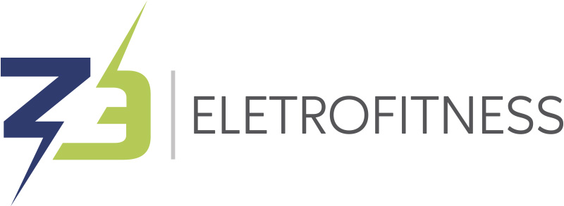

Experiência anterior · Mineração
Grupo Maurício Toledo
Marcas do grupo
Agenda, vendas, clientes, estoque, atendimento. Organizamos tudo para você enxergar o que está acontecendo e decidir com segurança, sem precisar entender de tecnologia.
Você não precisa ter equipe de TI nem saber de BI. Escolha o seu ramo e veja exemplos práticos.
Quase toda empresa já tem as informações de que precisa. Elas só estão espalhadas em sistemas, planilhas e conversas de WhatsApp.
Você pode começar por uma frente só, a que mais pesa hoje, e crescer aos poucos.
Em vez de contratar uma equipe, você conta com a GSA para organizar as informações, acompanhar os números com você e indicar onde agir, sem tomar decisões no seu lugar.
Cada área monta o seu painel e conversa com os próprios dados em português, dentro de indicadores certificados, permissões e padrão visual da empresa. O analista deixa de ser gargalo e passa a cuidar da qualidade.
Dicionário com definição, regra de cálculo, dono e fonte de cada número. A base que alimenta os painéis e a conversa com os dados.
As áreas montam as próprias visões dentro do padrão, sem depender de uma fila e sem criar mais um painel paralelo.
Perguntas sobre dados autorizados ao usuário, com explicação, próxima pergunta sugerida e trilha de auditoria.
A IA facilita a pergunta, mas não inventa indicadores nem altera regras sem validação. Quem decide continua sendo a pessoa.
Clique em uma pergunta e veja como fica quando os dados estão organizados. É uma simulação, com números de exemplo.
Escolha uma pergunta
Organizações com as quais atuamos em dados, inteligência empresarial, engenharia e operações.

Marcas do grupo
Seleção de relacionamentos atuais, experiências anteriores e projetos em parceria. A presença de marcas não implica endosso comercial.
Condomínios mais inteligentes, formação de pessoas e palestras: a mesma lógica de decidir com evidência.
Aplicativo com a marca do empreendimento e agentes que apoiam a gestão: chamados, documentos, manutenção, reservas e comunicação. O síndico supervisiona e autoriza; a decisão continua humana.
Solução em desenvolvimento. Integrações com plataformas externas dependem de disponibilidade técnica e homologação.
Conhecer a propostaPara engenheiros, arquitetos, gestores e profissionais técnicos: planejamento, estatística, dados, automação e IA aplicada ao trabalho real, com validação e responsabilidade técnica.
Também em formato corporativo. Consulte turmas e datas.
Consultar turmasPalestras e workshops sobre cultura data-driven, IA responsável e decisão empresarial para empresas, associações e escolas. Em estruturação: Analista e Cientista de Dados 5.0, para jovens a partir de 16 anos.
Solicitar uma palestra
Gustavo Santos é engenheiro civil, profissional de Relações Públicas e pós-graduado em Marketing pela FGV e em Engenharia de Planejamento, com formação complementar em Data Analytics e IA aplicada a negócios.
Sua trajetória une operações de dados em banco, engenharia civil em mineração e infraestrutura, dados ambientais com Python e Power BI, e hoje estratégia de dados, BI e IA. Na GSA, ele transforma essa experiência em soluções que começam pela decisão, e não pela ferramenta.
Não achou a sua dúvida? Fale com a gente pelo WhatsApp ou deixe sua mensagem.
Não. Começamos com o que você já tem: planilhas, sistema de gestão, agenda, WhatsApp. O primeiro passo é entender o seu negócio e indicar onde os dados podem ajudar primeiro.
Não publicamos tabela: cada projeto é dimensionado por escopo, fontes de dados, integrações e complexidade. Na conversa inicial você sai com uma ideia clara do caminho e do tipo de investimento envolvido.
Não. É uma conversa para entender seu momento e mostrar por onde dá para começar. Diagnóstico detalhado, análise e implantação são escopos contratados à parte, com proposta formal.
Nunca. A GSA organiza a informação, apresenta evidências e explica os resultados. A decisão continua com quem responde pelo negócio.
Tratamos dados conforme a LGPD, com acesso por perfil e regras definidas desde o diagnóstico. Nenhum dado é compartilhado ou usado como case sem autorização.
Depende do ponto de partida. Trabalhamos por etapas, com marcos e critérios de aceite combinados antes de começar, e sem prometer resultados que ainda não foram medidos.
Uma primeira conversa, sem compromisso, para entender o seu momento e mostrar por onde dá para começar.